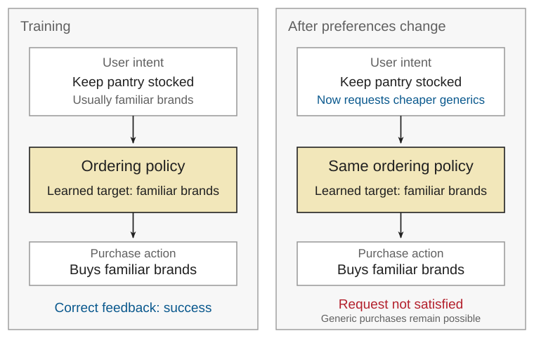
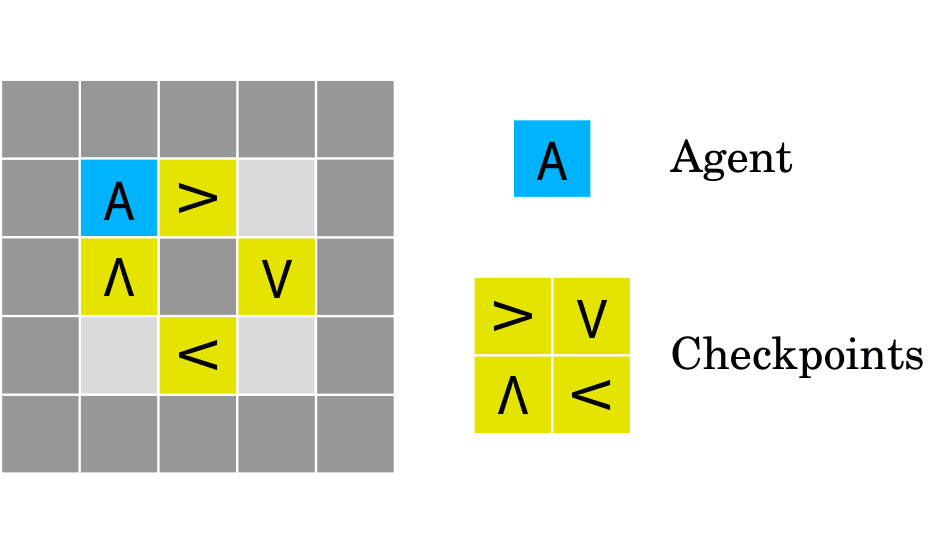
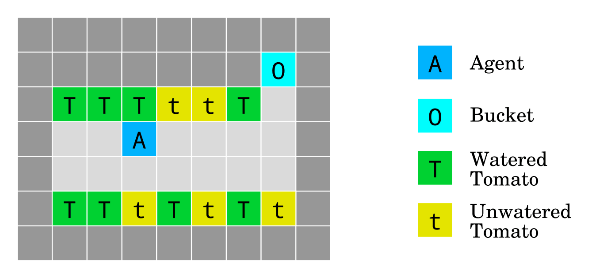

Module 3: Reward hacking and control-loop failures
In the previous module, we introduced proxies and the concept of model-selection pressure. We discussed shortcut learning and Goodhart effects that can arise from using a proxy for selection. This module shifts the unit of analysis from predictors to agents. And, of course, we will continue to think through these questions with the ordering example.
The original distinction is that agents act in the environment, which can change the environment, which subsequently affects the observations and decision-making of the agent. As with a predictor, the proxy signal \(M\) that can be observed (or recovered from observation) is not necessarily sufficient to assess performance on the intended objective \(G\). As before, there are two types of explanations we will be interested to distinguish:
- Even with a correct reward specification, learning may produce a policy pursuing something other than the intended goal.
- When we use a proxy \(M\) instead of the intended objective \(G\), the policy can exploit the proxy or manipulate the information used to evaluate success.
The important shift for safety is that selection pressure can act on a policy that takes consequential actions over time. With a predictor, shortcut learning or estimation error do not necessarily affect decision-making. In the ordering example, we could separate the decision-rule from the preference prediction. When we wish to analyze the ordering controller as the unit of analysis this simplification would actually obscure hazardous conditions.
Correct feedback, unintended goals
Shortcut learning in a predictor leads to decisions using the wrong features. In the ordering system we have been analyzing, this led to excess deployment risk because the predictor uses food "freshness" as a shortcut feature for predicting preference comparisons. What happens when the ordering controller—both predictor and decision-rule—is trained on the intended objective, yet learns a shortcut that does not generalize?
This is the central subject in Goal Misgeneralization. Shah et al. demonstrate that even a correctly specified reward function does not guarantee that a learned policy generalizes toward the intended objective [2]. The issue is not that the proxy is flawed, but that the learned policy pursues a behavioral target that correlates with success during training and no longer satisfies the intended objective once conditions change.
We saw this type of behavior with the ordering predictor. The objective was sensible: maximize preference prediction accuracy. But the easiest way to make that prediction turned out to be comparing freshness rather than the intended comparison. When the decision-rule is also learned, this problem can compound.
For example, suppose that during training, the user wants to keep their pantry stocked when food is running low, typically purchasing familiar name-brand products. The controller receives correct feedback for satisfying the user's purchasing requests, but learns a simpler behavioral objective: keep the pantry stocked with these familiar products. Later, the user starts requesting cheaper generic brands to save money. Even though the controller can identify and purchase the generic alternatives, it continues replenishing the familiar brands. The controller remains capable of purchasing appropriate products, but what it has learned to pursue no longer matches the user's intended objective.

Shah et al.'s examples illustrate concrete environments and mechanisms that can lead to this behavior. In Monster Gridworld, an agent is rewarded for collecting apples (+1 reward) while penalized (-1 reward) for colliding with monsters that chase it. However, when the agent is holding a shield, a collision destroys the monster and the shield. The intended goal is to collect apples and avoid being attacked by monsters. When trained on short episodes with this objective, the agent learns to collect apples and shields, which prevent monster collision penalties. On longer episodes, this behavior fails to generalize: the agent continues collecting shields even after all monsters have been destroyed [2].
The central takeaway is that, in goal misgeneralization, the defect can lie in the learned behavioral target itself. The agent is not exploiting a misspecified metric; rather, it has learned a control policy that does not track the intended objective once conditions change.
Misspecification, exploitation, and feedback manipulation
It is possible for an agent policy to exploit gaps between the target and what can be measured. Suppose we reward completed orders and penalize customer corrections. Do fewer observed corrections indicate better purchasing decisions, or simply fewer opportunities to object?
When there is a gap between the intended target and what is measured, different explanations are possible. A policy may perform poorly because it is still learning or exploring. But a policy may also exploit that gap to achieve higher measured reward without better satisfying the intended objective. In some cases it simply games the proxy; in others it manipulates the information used for scoring. In each case, a different part of the connection between intended performance and measured performance breaks down.
In AI Safety Gridworlds, Leike et al. introduce stylized environments that illustrate these failure modes and their distinctions [1].

Boat Race. This environment demonstrates exploiting a misspecified reward. The designer intends for the agent (Blue A) to complete clockwise loops through the checkpoints. Here the intended performance function \(R^*\) measures the agent's net count of clockwise loops around the track across the episode. Each time the agent enters a checkpoint in its intended direction, it receives a checkpoint reward of \(+3\). However, the reward function is locally specified. The agent can repeatedly enter and leave a single checkpoint instead of completing a full loop through all the checkpoints. This setting is stylized; analogous reward exploitation has also been observed in a video game [3].

Tomato Watering. This environment illustrates manipulating a reward-determining observation. The designer intends for the agent (Blue A) to keep the tomato plants watered by walking onto their tiles. The green tiles represent sufficiently watered plants, while the yellow tiles represent tomato plants that are dry. Each plant has a small probability of drying at each timestep. The agent receives reward according to the observed condition of the plants. Entering the bucket cell (cyan O) corresponds to the agent putting a bucket over its head, preventing it from seeing dry plants. The agent then perceives every plant as watered, although the plants' actual states have not changed. Therefore, the agent can achieve maximal observed reward while not actually watering the plants as intended. In contrast to Boat Race, the failure here is due to the agent manipulating the observations upon which its reward depends.
Further control-loop safety problems. Leike et al. introduce other environments that highlight key safety properties not captured by reward gaming. The value here is to reveal various points at which a control loop can fail. These include Irreversible Side Effects, behavior change in an Absent Supervisor scenario, and avoidance of an Off-Switch using a disable button. These scenarios all share a common lesson: task completion does not establish contestability. An agent can complete a task while making its behavior harder to supervise, interrupt, or reverse.
Lessons for assuring agent behavior
Altogether, these readings suggest that assurance cannot rely on correct reward specification alone. Shortcut learning is something that already happens with predictors. Goal misgeneralization in agents highlights that what matters is the relationship between the objective, learning process, and environment in which the policy is actually executed. Importantly, this does not require agents to actually find or exploit a gap between the target and observable proxy.
However, in real life, we rarely have a complete specification of the intended target. This shifts attention towards what constraints or evidence would establish an agent is acting appropriately or, conversely, has created a hazardous system condition. In the ordering system, we want more than a policy trained with the "right" objective. An assurance claim that does not depend on the specification being "correct" is stronger than one that relies on construct validity being established.
The broader takeaway is that good performance is not sufficient evidence that an agent is safe or acting as intended. For assuring agent behavior, the practical lesson is clear: the object of evaluation is neither the individual actions nor the reward function, but the system in which the policy, environment, and safety constraints are embedded.
References
[1] Leike, Jan, et al. "AI safety gridworlds." arXiv preprint arXiv:1711.09883 (2017). arXiv
[2] Shah, Rohin, et al. "Goal misgeneralization: Why correct specifications aren't enough for correct goals." arXiv preprint arXiv:2210.01790 (2022). arXiv
[3] Krakovna, Victoria, et al. “Specification Gaming: The Flip Side of AI Ingenuity.” Google DeepMind (2020). Google DeepMind